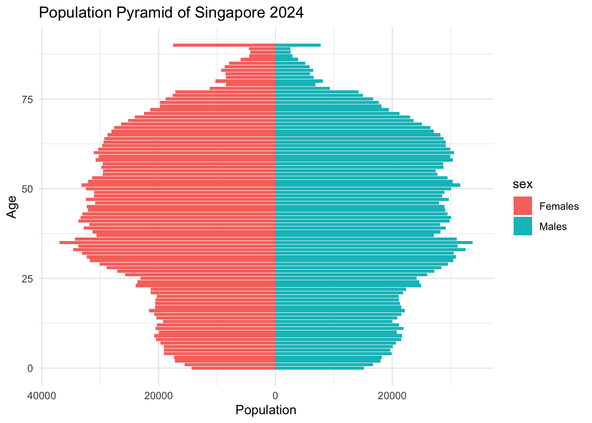

pacman::p_load(tidyverse,dplyr, janitor)Take-home_Ex01
Phase I
1 Overview
As Singapore’s population ages rapidly, understanding demographic structures and spatial distributions is more critical than ever. The objective for this visualize analysis is to uncover meaningful patterns in the aging demographic using three visualizations: a population pyramid to show the overall age-gender distribution, a bar chart to compare elderly proportions by planning area, and a heatmap to explore age group concentrations across regions. These visualizations aim to support public awareness and inform urban planners and policymakers on how the aging population is evolving geographically and demographically.
2 Data Preparation
2.1 Loading Packages
2.2 Understand the dataset
Data Source
The dataset used in this analysis is titled “Singapore Residents by Planning Area / Subzone, Single Year of Age and Sex, June 2024”, published by the Department of Statistics (DOS), Singapore. It provides demographic data of resident populations segmented by planning area, subzone, single year of age (from 0 to “90_and_over”), population number and sex (male and female), as of June 2024.
Data Explanation
| Variable | Definition | Data Type |
|---|---|---|
| PA | PA means Planning Area. | Text |
| SZ | SZ means subzone. In each planning area, there are several subzones. | Text |
| Age | In the dataset, age is the single year of age (i.e. 0, 1, 2, 3…). | Integer |
| Sex | Sex includes male and female. | Text |
| Pop | Pop means the number of population. | Integer |
| Time | All the time is 2024. | Integer |
2.3 Importing Data
sgresidents_2024 <- read_csv("respopagesex2024/respopagesex2024.csv")
glimpse(sgresidents_2024)Rows: 60,424
Columns: 6
$ PA <chr> "Ang Mo Kio", "Ang Mo Kio", "Ang Mo Kio", "Ang Mo Kio", "Ang Mo K…
$ SZ <chr> "Ang Mo Kio Town Centre", "Ang Mo Kio Town Centre", "Ang Mo Kio T…
$ Age <chr> "0", "0", "1", "1", "2", "2", "3", "3", "4", "4", "5", "5", "6", …
$ Sex <chr> "Males", "Females", "Males", "Females", "Males", "Females", "Male…
$ Pop <dbl> 10, 10, 10, 10, 10, 10, 10, 10, 30, 10, 20, 10, 20, 30, 30, 10, 3…
$ Time <dbl> 2024, 2024, 2024, 2024, 2024, 2024, 2024, 2024, 2024, 2024, 2024,…2.4 Data Clean and Transform
2.4.1 Data Clean
The column names in the original dataset were cleaned and standardized by using the clean_names() function from the janitor package. This step converts all column names to lowercase and replaces spaces or special characters with underscores, ensuring they are consistent and easier to reference in subsequent code.
sgresidents_2024 <- sgresidents_2024 %>% clean_names()2.4.2 Filter Aging Group (65+)
This step filters the dataset to focus on the aging population, defined as residents aged 65 and above. Since the age column includes the value “90_and_Over” as a character string, it was first replaced with “90” to allow for numeric conversion. The age column was then converted to integer format. We filtered the dataset to retain only records where age is 65 or higher and excluded any rows with missing planning area (pa) or population (pop) values.
elderly <- sgresidents_2024 %>%
mutate(age = if_else(age == "90_and_Over", "90", age),
age = as.integer(age)) %>%
filter(age >= 65, !is.na(pa), !is.na(pop))3 Visualization Charts
3.1 Population Pyramid
The population pyramid of Singapore in 2024 illustrates a distinctly aging demographic. The population is mainly concentrated between 40 and 60 years old, which means Singapore is stepping into an aging society. The tapering base reflects a low birth rate in recent decades, with significantly fewer residents under age 20.
The gender split is also apparent. Female residents increasingly outnumber males in the oldest age, which can support the statement of longer female life expectancy.
This aging structure suggests future challenges, including rising healthcare needs, a shrinking workforce, etc. The visulization underscores the urgency for social policies to support an elderly-centric population society.
pyramid_data <- sgresidents_2024 %>%
mutate(age = if_else(age == "90_and_Over", "90", age),
age = as.integer(age)) %>%
filter(age <= 100) %>%
group_by(age, sex) %>%
summarise(population = sum(pop), .groups = "drop") %>%
mutate(population = if_else(sex == "Females", -population, population))ggplot(pyramid_data, aes(x = age, y = population, fill = sex)) +
geom_col() +
coord_flip() +
scale_y_continuous(labels = abs) +
labs(title = "Population Pyramid of Singapore 2024",
x = "Age", y = "Population") +
theme_minimal()
3.2 Aging by Planning Area (Proportion Aged 65+)
The bar chart shows the percentage of elderly residents (aged 65 and above) in each planning area of Singapore as of June 2024.
From the chart, it is clear that some areas with long-established communities have a higher percentage of aging residents than others. For example, areas like Outram, Ang Mo Kio, and Bukit Merah have the highest proportions of elderly people, with more than 24% of their residents aged 65 or older.
On the other hand, newer or developing areas like have much lower proportions of elderly, likely because younger families are moving in and the towns are still growing.
This pattern shows that the aging population distribution is not evenly spread across the Singapore. These differences are important for planning healthcare, transport, and social services. For instance, older areas may need more elder care facilities, while younger areas may focus more on schools and childcare.
total_area <- sgresidents_2024 %>%
group_by(pa) %>%
summarise(total = sum(pop), .groups = "drop")
elderly_area <- elderly %>%
group_by(pa) %>%
summarise(elderly = sum(pop), .groups = "drop")
aging_ratio <- left_join(total_area, elderly_area, by = "pa") %>%
filter(total > 0) %>%
mutate(elderly = replace_na(elderly, 0),
aging_percentage = elderly / total)ggplot(aging_ratio, aes(x = reorder(pa, aging_percentage),
y = aging_percentage)) +
geom_col(fill = "lightpink") +
coord_flip() +
scale_y_continuous(labels = scales::percent_format(accuracy = 1)) +
labs(
title = "Proportion of Elderly (65+) by Planning Area",
x = "Planning Area",
y = "Elderly Proportion"
) +
theme_minimal(base_size = 12) +
theme(axis.text.y = element_text(size = 13),
axis.text.x = element_text(size = 13),
plot.title = element_text(size = 25, face = "bold",
hjust =0.5),
plot.margin = margin(10, 20, 10, 10))
3.3 Heatmap: Age Distribution by Planning Area
Since in the 3.2 section, we found that the aging distribution is not evenly spread. Therefore, in this section, the heatmap shows how the elderly population is distributed across different planning areas and age groups in Singapore.
Each cell’s color represents the number of elderly people. Lighter cells mean more people in that age group and area. From the chart, we can see that areas like Bedok, Tampines, Hougang have the largest elderly populations, especially in the 65–74 age group.
This heatmap helps us understand not just where elderly people live, but also their age range. For instance, Bedok has the highest number of population which focus on 65-74 age group, which mean that it would have highest number of 85+ age group in 10 - 20 years. This forecasting can help the government prepare to support these areas.
heatmap_grouped <- elderly %>%
mutate(age = ifelse(age == "90_and_Over", "90", age),
age = as.integer(age),
age_group = case_when(
age >= 65 & age <= 74 ~ "65–74",
age >= 75 & age <= 84 ~ "75–84",
age >= 85 ~ "85+",
TRUE ~ NA_character_)) %>%
filter(!is.na(age_group)) %>%
group_by(pa, age_group) %>%
summarise(total_pop = sum(pop), .groups = "drop")ggplot(heatmap_grouped, aes(x = age_group, y = reorder(pa, -total_pop), fill = total_pop)) +
geom_tile(color = "white") +
scale_fill_viridis_c(option = "C", name = "Population") +
labs(
title = "Heatmap of Elderly Population by Age Group and Planning Area",
x = "Age Group",
y = "Planning Area"
) +
theme_minimal(base_size = 13) +
theme(axis.text.y = element_text(size = 13),
axis.text.x = element_text(size = 15),
plot.title = element_text(size = 25, face = "bold",
hjust =0.5),
plot.margin = margin(10, 20, 10, 10))4 Conclusion
Three visulization charts provide a clear picture of Singapore’s aging population and how it is distributed across planning areas.
The population pyramid confirms that Singapore is a rapidly aging society, with a shrinking youth base and a growing older adult population. The bar chart highlights the areas with higher elders percentage. The heatmap adds another layer of insight by showing which planning areas have the largest numbers of elderly in each age group. These findings underscore the importance of elder care infrastructures planning, and community services tailored to local aging trends across Singapore.
Phase II
5 Original Visualization
Justification
I chose to analyze this population pyramid because it is very similar to the first one I built for my own visualization. As I worked on mine, I was aware of the areas that could be enhanced to make the chart more understandable and informative. I discovered a few problems with my peer’s version, including some unclear labeling and potentially incorrect values, particularly with the method that the population was calculated or presented. This allowed me to think about both her and my plot and then try to make it better in my modified version.
pyramid_data <- sgresidents_2024 %>%
group_by(age, sex) %>%
summarise(pop = sum(pop), .groups = "drop") %>%
mutate(pop = ifelse(sex == "Males", -pop, pop))
ggplot(pyramid_data, aes(x = age, y = pop, fill = sex)) +
geom_bar(stat = "identity") +
coord_flip() +
scale_y_continuous(labels = abs) +
scale_fill_manual(values = c("Males" = "#102E50", "Females" = "#F7CFD8")) +
scale_x_discrete(breaks = seq(0, 100, by = 10)) +
labs(title = "Singapore Age Pyramid (2024)",
x = "Age", y = "Population") +
theme_classic()5.1 Good Points of the Visualization
Good Points of the Visualization
- Effective Use of Symmetry for Comparison
- The mirrored layout allows direct visual comparison between males and females across age groups, taking advantage of pre-attentive processing—our brains can instantly detect asymmetries or trends.
- Clear Visual Contrast Between Genders
- The use of distinct colors (
#102E50for Males and#F7CFD8for Females) provides a strong contrast, making it easy to differentiate between the two groups at a glance.
- The use of distinct colors (
- Clean Axes and Labeling
- Labels are direct and aligned with the variable meanings (Age, Population) and axes are flipped for better age group readability—respecting orientation best practices for such charts.
5.2 Areas for Further Improvement
Areas for Further Improvement
- Unbalanced X-Axis for Population
- Issue: The x-axis (population) scale is not symmetric, making male and female distributions visually unequal even if numbers are comparable.
- Improvement: Use
scale_y_continuous(limits = c(-max, max))to ensure balanced comparison between both sides.
- Lack of Data Labels
- Issue: The bars show magnitude but lack percentage or population labels, which limits interpretability, especially for identifying the proportion of each group.
- Improvement: Add
geom_text()to display percentages (or absolute values), enhancing clarity and precision.
- Limited Context or Insights
- Issue: The chart has no subtitle and annotations to help viewers interpret demographic trends (e.g., aging population bulge).
- Improvement: Add a subtitle, annotations texts to guide interpretation and highlight key demographic observations.
5.3 Makeover Version of the Data Visualization
pyramid_data <- sgresidents_2024 %>%
mutate(age = if_else(age == "90_and_Over", "90", age),
age = as.integer(age)) %>%
filter(age <= 100) %>%
group_by(age, sex) %>%
summarise(population = sum(pop), .groups = "drop") %>%
mutate(population = if_else(sex == "Females", -population, population),
age = factor(age, levels = sort(unique(age)))) # Fix for axis labels
age_totals <- pyramid_data %>%
group_by(age) %>%
summarise(age_total = sum(abs(population)))
pyramid_data <- pyramid_data %>%
left_join(age_totals, by = "age") %>%
mutate(percent = abs(population) / age_total * 100)
ggplot(pyramid_data, aes(x = age, y = population, fill = sex)) +
geom_bar(stat = "identity") +
coord_flip(clip = "off") +
scale_y_continuous(
labels = abs,
limits = c(-40000, 40000),
expand = c(0, 0)
) +
scale_fill_manual(values = c("Males" = "#446AAB", "Females" = "#D97A95")) +
geom_text(aes(label = paste0(round(percent, 1), "%")),
position = "identity",
hjust = ifelse(pyramid_data$sex == "Males", 1.05, -0.05),
size = 2.8,
color = "white") +
scale_x_discrete(breaks = seq(0, 100, by = 10)) +
annotate("text", x = 95, y = -36000, label = "Females", color = "#D97A95",
size = 5, hjust = 0) +
annotate("text", x = 95, y = 36000, label = "Males", color = "#446AAB",
size = 5, hjust = 1) +
labs(
title = "Singapore Age Pyramid (2024)",
subtitle = "Females on the left (pink), Males on the right (blue),",
x = "Age",
y = "Population"
) +
theme_classic() +
theme(legend.position = "top",
axis.title.x = element_text(size = 25),
axis.title.y = element_text(size = 25),
axis.text.x = element_text(size = 15),
axis.text.y = element_text(size = 15),
plot.title = element_text(size = 30, face = "bold",hjust = 0.5),
plot.subtitle = element_text(size = 15, hjust = 0.5),
plot.margin = margin(10, 40, 10, 40),
legend.text = element_text(size = 15),
legend.title = element_text(size = 25))
Improvements (makeover version vs original version)
- Reversed Axis Annotation and Added Subtitle
- I swapped the annotation positions so that Females are labeled on the left (negative side) and Males on the right (positive side), matching the plot structure. Also by adding the subtitle under the plot title stating the positions and color of the male and female, which clears up confusion for viewers unfamiliar with the convention, making the chart easier to interpret.
- Increased Plot Range and Margin for Visibility
- I expanded the
scale_y_continuous()limits and margins, and usedclip = "off"to ensure annotations were not cut off. This ensure that all labels and annotations are fully visible within the chart area.
- I expanded the
- Added Percent Labels Within Bars
- I used
geom_text()to include the percentage distribution for each age group. Making the chart more informative at a glance, showing both proportion and distribution without requiring estimation.
- I used
Advantages (i.e. why do these improvements)
- Easier Interpretation for All Audiences
- Adding clear annotations (“Males” and “Females”) and a helpful subtitle guides viewers—especially those unfamiliar with population pyramids—to understand which side represents which gender, reducing misinterpretation.
- Enhanced Data Readability
- Including percentage labels inside the bars helps readers instantly grasp the proportion of each gender in each age group, without needing to estimate from the axis.
- Improved Visual Structure
- A more polished and comprehensive design is produced by adjusting the annotations and expanding the plot margins to ensure that all components—labels and annotations—are completely visible and not covered.
6 References
Singapore Residents by Planning Area / Subzone, Single Year of Age and Sex, June 2024